🍔 快餐连锁大亨
Food Chain Magnate · 设计：Jeroen Doumen / Joris Wiersinga · Splotter Spellen 出版（2015）· 一刻馆官方中文版规则书全文转录
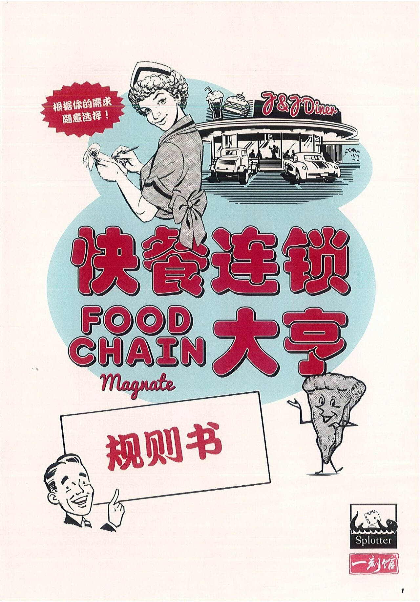
本页整理自微信公众号「桌游怎么玩」《快餐连锁大亨【桌游规则】Food Chain Magnate》发布的《快餐连锁大亨》一刻馆官方中文版规则书（Splotter Spellen 出品，大中华地区独家版权：一刻馆桌游，全书 15 页含封面），逐页全文转录，原书扫描图随文嵌入——点击任意图片即可放大查看。规则内容归 Splotter Spellen、一刻馆及版权方所有，转录仅供个人学习查阅。
整理说明：本页此前收录的焦无耻排印中文译本（译自英文原版书）已由本一刻馆官方中文版整体取代，旧版全文见仓库 Git 历史（提交 1a76ebc）。一刻馆官译用语照录：「员工牌/员工工位」「忙碌标记」「银行资金储备牌」「里程碑牌」「免下车服务」「即将开业/欢迎光临」「快餐店入口」等。原书排印问题照录并加〔原文如此〕：英文人名单词间无空格连排（P.2 制作人员），「这意味著」（P.9、P.13），「你经过与饮料进货点（正交）相邻道路格才行」（P.10），「快餐店，大区经理」半角逗号（P.10），「将会死宅在家里」「出现次数的最多」（P.11），「有关。）。」（P.12），以及里程碑金额两处不一致——P.5 里程碑牌图印作「首个拥有$700」而 P.14 详解印作「首个拥有$100」（效果描述相同，均为首席执行官视同首席财务官）。P.3 游戏盒封面气泡标语与盒底小字扫描分辨率下无法完全辨认，已照实标注。〔图 …〕说明与个别小节标题为整理所拟。
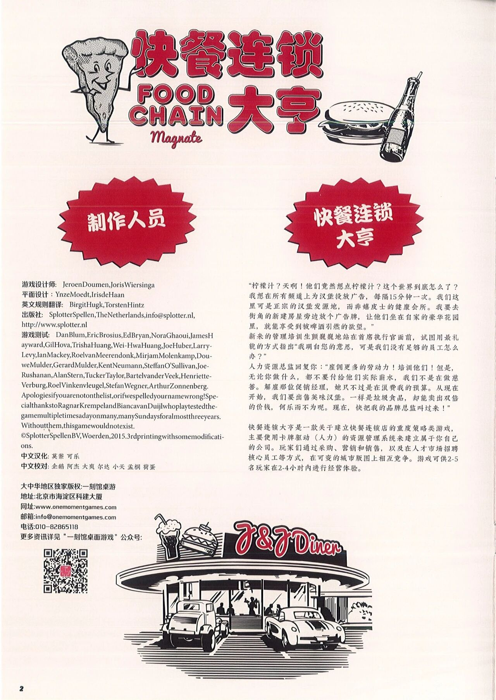
〔图 左侧披萨切片卡通形象，右侧汉堡与香槟瓶插图〕
制作人员
游戏设计师： JeroenDoumen,JorisWiersinga
平面设计：YnzeMoedt,IrisdeHaan
英文规则翻译： BirgitHugk,TorstenHintz
出版社： SplotterSpellen,TheNetherlands,info@splotter.nl, http://www.splotter.nl
游戏测试： DanBlum,EricBrosius,EdBryan,NoraGhaoui,JamesHayward,GilHova,TrishaHuang,Wei-HwaHuang,JoeHuber,LarryLevy,IanMackey,RoelvanMeerendonk,MirjamMolenkamp,DouweMulder,GerardMulder,KentNeumann,SteffanO'Sullivan,JoeRushanan,AlanStern,TuckerTaylor,BartelvanderVeek,HenrietteVerburg,RoelVinkenvleugel,StefanWegner,ArthurZonnenberg.
Apologies if you are not on the list, or if we spelled your name wrong! Special thanks to Ragnar Krempel and Bianca van Duijl who playtested the game multiple times a day on many, many Sundays for almost three years. Without them, this game would not exist.〔原文如此：原文英文单词间无空格连排〕
©SplotterSpellenBV,Woerden,2015.3rdprintingwithsomemodifications.
中文汉化： 莫蓁 可乐
中文校对： 企鹅 阿杰 大爽 尔达 小天 孟桐 荷蛋
大中华地区独家版权：一刻馆桌游
地址：北京市海淀区科建大厦
网址：www.onemomentgames.com
邮箱：info@onemomentgames.com
电话：010-82865118
更多资讯详见"一刻馆桌面游戏"公众号：
〔图 微信公众号二维码〕
快餐连锁大亨
"柠檬汁？天呐！他们竟然想点柠檬汁？这个世界到底怎么了？我想在所有频道上为汉堡投放广告，每隔15分钟一次。我们这里可是正宗的汉堡发源地，而非嬉皮士的健康会所。我要去街角的新建房屋旁边放个广告牌，让他们坐在自家的豪华花园里，就能享受到被啤酒引燃的欲望。"
新来的管理培训生颤巍巍地站在首席执行官面前，试图用最礼貌的方式指出"我明白您的意思，可是我们没有足够的员工怎么办？"
人力资源总监回复你："雇佣更多的劳动力！培训他们！但是，无论你做什么，都不要付给他们实际薪水，我们不是在做慈善。解雇那位促销经理，她只不过是在浪费我的预算。从现在开始，我们要出售美味汉堡。一样是垃圾食品，却能卖出双倍的价钱，何乐而不为呢。现在，快把我的品牌总监叫过来！"
快餐连锁大亨是一款关于建立快餐连锁店的重度策略类游戏，主要使用卡牌驱动（人力）的资源管理系统来建立属于你自己的公司。玩家们通过采购、营销和销售，以及在人才市场招聘核心员工等方式，在可变的城市版图上相互竞争。游戏可供2-5名玩家在2-4小时内进行经营体验。
〔图 底部为"J & J Diner"汽车餐厅建筑与两辆汽车插画〕
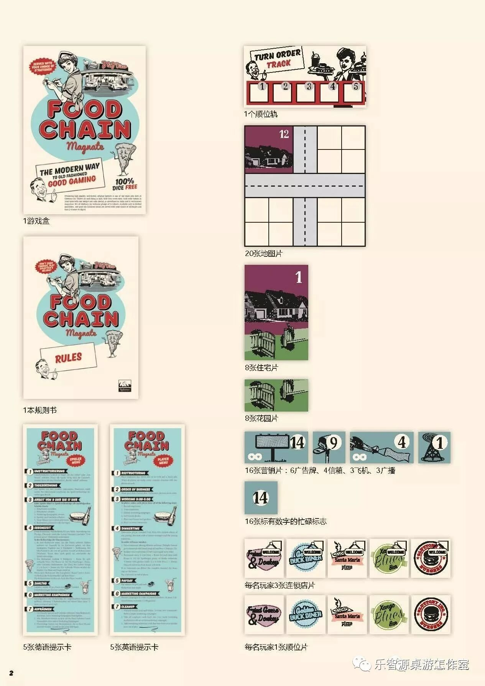
〔本页为游戏配件展示页，无印刷章节标题，仅含组件照片与图注；以下按版面自左栏至右栏、自上而下转录〕
〔图 游戏盒封面照片，印有"快餐连锁大亨 FOOD CHAIN Magnate"字样、女服务员与汽车餐厅插画、左上红色锯齿气泡标语（"根据你的需求 随意选择！"〔?〕，扫描模糊）、中部标牌"用现代方式诠释老式经典游戏"、"100%没有骰子"字样，底部有一段小字介绍文字（无法辨认）及"一刻馆"标识〕
- 1个游戏盒
〔图 规则书封面照片，白底，图案与游戏盒封面相近，下方标牌文字"规则书"，右下角有 Splotter Spellen 与"一刻馆"标识〕
- 1本规则书
〔图 中文菜单（玩家辅助卡）照片，顶部标题"快餐连锁大亨"及"玩家辅助"字样，正文为编号1-7的小节标题列表：1 重组结构、2 商业秩序、3 工作时间 9:00-17:00、4 晚餐时间、5 发放薪水、6 营销活动、7 清理阶段；各小节内正文小字无法辨认〕
- 5份中文菜单
〔图 回合顺位表照片，印有"回合顺位表"字样、男女服务员插画，下方一排标注1、2、3、4、5的五个空格〕
- 1张回合顺位表
〔图 地图板块照片，左上角编号12，紫红色房屋图案，一条纵向道路与一条横向道路十字相交〕
- 20个地图板块
〔图 房屋板块照片，左上角编号1，上半为紫红色底房屋图案，下半为绿色底花园栅栏图案〕
- 8个房屋板块
〔图 花园板块照片，绿色底栅栏图案〕
- 8个花园板块
〔图 四块营销板块照片，依次为广告牌（左下∞符号、右上白圈数字14）、邮箱（白圈数字9）、拖旗飞机（左下∞符号、白圈数字4）、广播塔（白圈数字1）〕
16个营销板块：6个广告牌、4个邮箱、3架飞机和3台广播
〔图 蓝灰色方形标记照片，中央白色圆圈内数字14〕
- 16个"忙碌"标记
〔图 五款快餐连锁店指示物照片，每款上下两枚（上排带"欢迎光临"挂牌图案，下排无）：驴肉火烧&烧鹅（连锁店）、黄金烤鸭连锁店、圣玛利亚披萨连锁店、赞果蓝调酒吧（连锁店）、格拉托尼连锁店（专业汉堡）〕
5种可供玩家选择的快餐连锁店：
每种快餐连锁店包含3个餐厅指示物和1个顺位标记
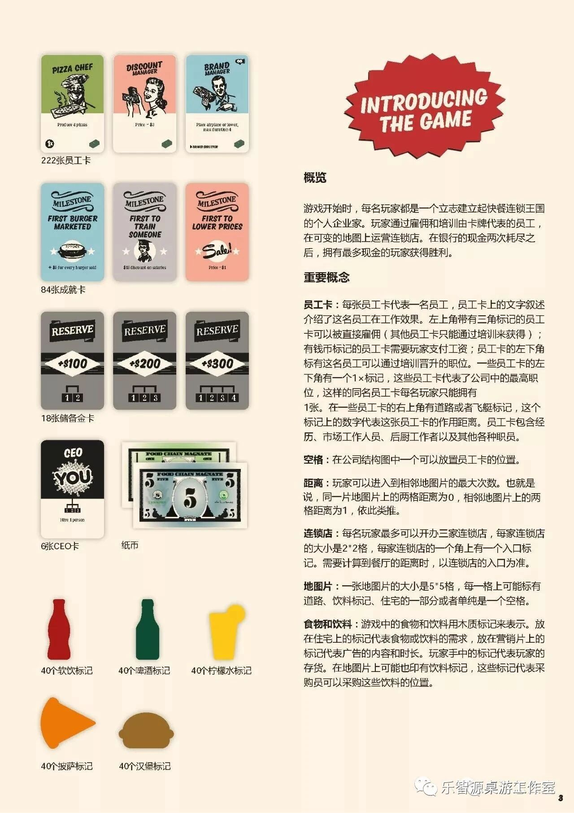
〔左栏为游戏配件展示，无印刷章节标题，仅含组件照片与图注；右栏为正文〕
〔图 三张员工牌照片：绿色"披萨主厨"（文字"制作8个披萨"，左下角黑色圆形"1x"标记，右下角钞票堆图标）；粉色"促销经理"（文字"售价 -$3"，右下角钞票堆图标）；蓝色"品牌经理"（右上角∞形标记，文字"放置飞机或更低级的营销板块，最大持续时长为4回合"，左下角小字"▶ 品牌总监"，右下角钞票堆图标）〕
- 222张员工牌
〔图 三张里程碑牌照片，牌顶均印有"里程碑牌"与"MILESTONE"：蓝色"首个推销汉堡"（汉堡图案，文字"每售出一个汉堡 +$5"）；紫灰色"首个培训员工"（戴学士帽人物图案，文字"少支付$15薪水"）；粉色"首个降价"（"Sale!"字样，文字"售价 -$1"）〕
- 84张里程碑牌
〔图 三张银行资金储备牌照片，均印黑色横幅"银行资金储备"：+$100（下方结构图标1、2）；+$200（下方结构图标1、2、3）；+$300（下方结构图标1、2、3、4）〕
- 18张银行资金储备牌
〔图 黑色"首席执行官"卡照片，印"就是你"字样、组织结构图标（1、2、3）及文字"雇佣1名员工"；右侧为两张纸质钞票照片（FOOD CHAIN MAGNATE，面值1/ONE 与 5/FIVE）〕
- 6张首席执行官牌
- 纸质钞票
〔图 木质指示物照片两排：红色汽水瓶、墨绿色啤酒瓶、黄色柠檬汁杯；橙色披萨角、棕色汉堡〕
40瓶汽水（木质） 40瓶啤酒（木质） 40瓶柠檬汁（木质）
40块披萨（木质） 40个汉堡（木质）
游戏介绍
〔图 红色锯齿星形标题图案，内印"游戏介绍"四字〕
游戏概述
每名玩家分别扮演快餐行业创业者，通过雇佣和培训员工（由卡牌表示），以及在可变动的版图中经营公司业务，建立各自的快餐连锁店。游戏持续进行，直到银行的储备金用完（两次）。最富有的玩家获得游戏胜利。
该游戏分阶段进行，有的阶段玩家们可以同时执行行动，有的阶段则必须轮流执行行动。
概念解释
员工牌：这些卡牌描述了员工的工作性质，图像下方的文字描述这个员工在公司里的工作职责。卡牌左上角绘有▶标记的员工，可被人力资源人员雇佣。卡牌上绘有〔钞票堆图标〕标记的员工要求支付薪水。可以通过培训来晋升职位的卡牌，在左下角描述了未来发展方向可选择的职业。有一部分卡牌的左下角绘有〔黑色圆形"1x"图标〕，表示该领域的最高职位。这种特殊卡牌每名玩家只能拥有一张。有一部分卡牌右上角绘有"距离"标记，该距离是通过道路或飞艇来进行计算的。员工牌包括管理人员、营销人员、厨房工作人员以及其他职位。
员工工位：在公司组织结构中，员工牌可以放置的位置。
距离：玩家穿过不同地图板块的次数，除非卡牌上绘有飞艇标记〔飞艇图标〕，通常是指走过一条道路的距离。
快餐店：每名玩家都有三家快餐店可供选择，每家快餐店占地为2x2方格大小。在快餐店板块上画有门符号的一角是快餐店的入口。如果你需要从快餐店出发计算距离，始终从入口处开始计算。
地图板块：地图上的元素不是固定的，可以被改变，地图板块的尺寸为5x5方格大小。初始地图上包含道路、饮料、房屋的一部分或空地。
食物和饮料：木质标记代表食物（汉堡和披萨）以及饮料（汽水、柠檬汁和啤酒）。当它们放在房屋上时，表示该处住户的不同需求；当它们放在营销板块上时，表示广告内容以及广告时长；当它们放在玩家面前，表示该玩家持有的商品库存。地图上也绘有饮料图案，表示采购人员可以在这个地点获得此类型的饮料。
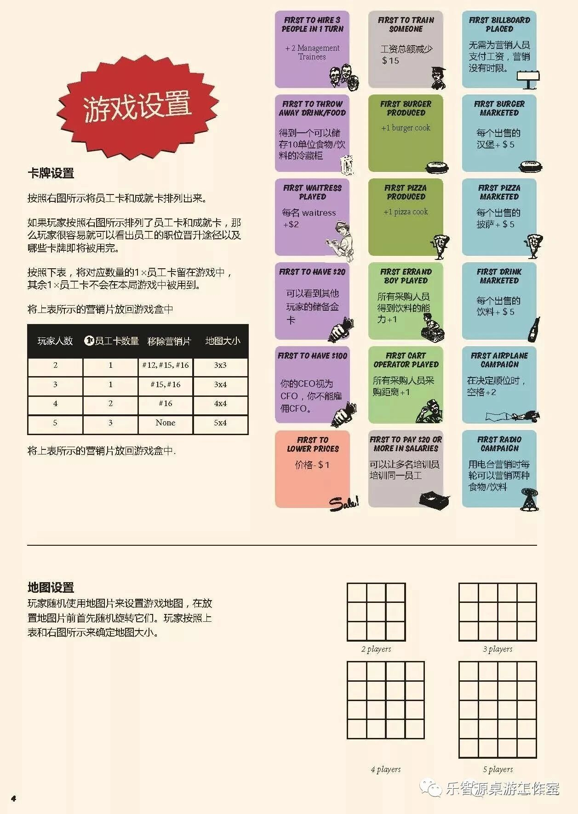
〔图 页面左上方为红色爆炸星形色块，内印白色大字标题"初始设置"〕
卡牌设置
根据右侧图片位置，放置员工牌和里程碑牌。
当你如图片所示的方式放置卡牌时，能够对升级路线有一个大致的直观了解，并且可以很容易地看到哪些卡牌即将被用完。
对于每一张绘有 1x 标记的员工牌，根据玩家人数移除对应数量的卡牌，得到如下所示的卡牌数：
| 玩家人数 | 1x 员工牌使用数量： | 移除广告牌 | 地图尺寸 |
|---|---|---|---|
| 2 | 1 | #12,#15,#16 | 3x3 |
| 3 | 1 | #15,#16 | 3x4 |
| 4 | 2 | #16 | 4x4 |
| 5 | 3 | 无 | 5x4 |
将上方表格中列出的广告牌放回游戏盒里。
〔图 页面右侧为 3 列 × 6 行共 18 张里程碑牌的摆放示意图，各牌标题均以"首个"开头，牌面配有人物或物品小插图；以下按列、自上而下照录各牌文字〕
第一列：
- 首个在一回合内雇佣3位员工｜+2管理培训生
- 首个丢弃饮料/食物｜获得1个冰箱，可存放10件物品（饮料或食物）
- 首个打出服务员｜每位服务员+$2
- 首个拥有$20｜可以查看银行资金储备牌
- 首个拥有$700｜你的首席执行官视同是首席财务官（+50%现金收入）你不能持有首席财务官牌了〔原文如此：此牌印作"$700"，P.14 详解同效果里程碑印作"首个拥有$100"，两处金额不一致〕
- 首个降价｜售价-$1（牌右下角另印有手写体 Sale!）
第二列：
- 首个培训员工｜少支付$15薪水
- 首个制作汉堡｜+1汉堡厨师
- 首个制作披萨｜+1披萨厨师
- 首个打出跑腿伙计｜所有饮料采购员工从每个来源处获取的饮料数量 +1
- 首个打出手推车操作员｜所有饮料采购员工的移动距离 +1
- 首个支付$20或更高薪水｜可以让多名培训人员培训同一名员工
第三列：
- 首个放置广告牌｜不用向营销人员发放薪水；进行永久营销
- 首个推销汉堡｜每售出一个汉堡 +$5
- 首个推销披萨｜每售出一个披萨 +$5
- 首个推销饮料｜每售出一瓶饮料 +$5
- 首个飞机营销｜在决定回合顺位时，员工的工位数量 +2
- 首个广播营销｜广播在每回合营销时可产生2份物品需求而非1份
地图设置
通过随机选择地图板块的方式创建地图。将每个地图板块随机旋转，然后放置在矩阵中。根据玩家人数使用相应数量的地图板块，具体参考上方表格及右侧图片。
〔图 右下角为四张空白示意网格，下方分别标注"2名玩家"（3 行 3 列格）、"3名玩家"（3 行 4 列格）、"4名玩家"（4 行 4 列格）、"5名玩家"（5 行 4 列格）〕
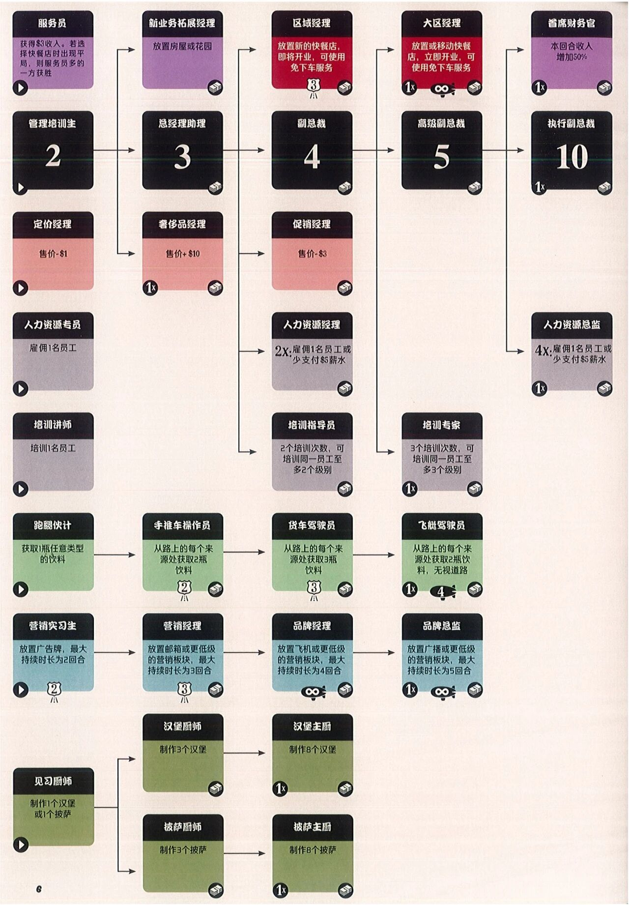
〔图 整页为一幅员工牌流程图，无印刷小节标题。黑色圆角标题栏的卡片按 5 列排布，卡片之间以带箭头的折线连接构成升级路线（部分连线经竖直折线跨行连接，具体走向以原图为准）。每张牌左下角或印播放键样式的三角标记、或印"1x"圆形标记，多数牌右下角印有纸币堆小图标，部分牌下缘印公路盾牌数字或飞机、飞艇小图标。以下按行、自左向右照录各牌文字〕
第 1 行：
- 服务员｜获得$3收入。若选择快餐店时出现平局，则服务员多的一方获胜
- 新业务拓展经理｜放置房屋或花园
- 区域经理｜放置新的快餐店，即将开业，可使用免下车服务（下缘公路盾牌数字 8）
- 大区经理｜放置或移动快餐店，立即开业，可使用免下车服务（左下角 1x；下缘飞艇图标）
- 首席财务官｜本回合收入增加50%（左下角 1x）
第 2 行（牌面为黑色，中央印一个大数字）：
- 管理培训生｜2
- 总经理助理｜3
- 副总裁｜4
- 高级副总裁｜5
- 执行副总裁｜10（左下角 1x）
第 3 行：
- 定价经理｜售价-$1
- 奢侈品经理｜售价+$10（左下角 1x）
- 促销经理｜售价-$3
第 4 行：
- 人力资源专员｜雇佣1名员工
- 人力资源经理｜2x:雇佣1名员工或少支付$5薪水
- 人力资源总监｜4x:雇佣1名员工或少支付$5薪水（左下角 1x）
第 5 行：
- 培训讲师｜培训1名员工
- 培训指导员｜2个培训次数，可培训同一员工至多2个级别
- 培训专家｜3个培训次数，可培训同一员工至多3个级别（左下角 1x）
第 6 行：
- 跑腿伙计｜获取1瓶任意类型的饮料
- 手推车操作员｜从路上的每个来源处获取2瓶饮料（下缘公路盾牌数字 2）
- 货车驾驶员｜从路上的每个来源处获取3瓶饮料（下缘公路盾牌数字 3）
- 飞艇驾驶员｜从路上的每个来源处获取2瓶饮料，无视道路（左下角 1x；下缘印飞艇图标与数字 4）
第 7 行：
- 营销实习生｜放置广告牌，最大持续时长为2回合（下缘公路盾牌数字 2）
- 营销经理｜放置邮箱或更低级的营销板块，最大持续时长为3回合（下缘公路盾牌数字 3）
- 品牌经理｜放置飞机或更低级的营销板块，最大持续时长为4回合（下缘飞机图标）
- 品牌总监｜放置广播或更低级的营销板块，最大持续时长为5回合（左下角 1x；下缘飞机图标）
第 8 行（见习厨师分出汉堡、披萨两支）：
- 见习厨师｜制作1个汉堡或1个披萨
- 汉堡厨师｜制作3个汉堡
- 汉堡主厨｜制作8个汉堡（左下角 1x）
- 披萨厨师｜制作3个披萨
- 披萨主厨｜制作8个披萨（左下角 1x）
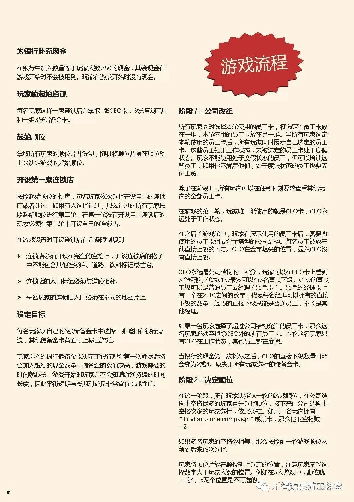
银行资金储备
将$50x玩家人数的钞票放入银行中。使用一套实用的（小额）钞票。之后，把剩下的钞票放回游戏盒里，在游戏开始时，玩家不会获得任何钞票。
玩家标记
每名玩家选择一种快餐连锁店标记，并得到1张首席执行官牌、3个快餐店板块和一套3张的银行资金储备牌。
初始顺位
将所选的快餐连锁店标记洗混，随机抽取标记并按照抽取的先后顺序放置在回合顺位表上。
放置第一家快餐店
每名玩家必须放置一个起始快餐店板块。
从顺位表末位的玩家开始，一直到顺位表首位的玩家结束，每名玩家可以选择放置快餐店板块或跳过。如果有任何玩家跳过了，则需要按顺位表的正向顺序进行第二轮放置，每名尚未放置快餐店板块的玩家现在必须放置，而已放置快餐店板块的玩家则不参与第二轮放置。
快餐店的初始布局有一些限制条件：
- 快餐店板块必须摆放在完全空旷的方格里，这些方格不能包含其他快餐店、道路、饮料或房屋。
- 快餐店的入口边界必须放置在与道路相连的方格上。
- 快餐店的入口不能与已存在于场上的快餐店入口位于同一个地图板块上。
选择目标
每名玩家从自己的银行资金储备牌中选择一张，面朝下放置在银行边上。将其他的银行资金储备牌面朝下弃置，在之后的游戏过程中不会使用到它们。
玩家们所选的银行资金储备牌的总和表明了银行资金耗尽时需要向银行增加的资金总额。卡牌的数额越高，游戏的持续时间越长。在游戏开始时，玩家无法知道这场游戏将持续多长时间，这使得如何平衡短期和长期的游戏策略变得更具挑战性。
游戏阶段
〔图 红色爆炸星形贴纸，内有白色大字"游戏阶段"〕
阶段一：重组结构
每名玩家同时选择本回合要使用的员工牌，将这些卡牌扣置在桌面上。余下的其他卡牌则扣置成另一个独立牌堆。当所有玩家都选择好本回合需要在公司组织结构中使用的员工牌之后，同时翻开，这些员工被认为是工作中状态；余下的卡牌不能在本回合中使用，但可以被培训，如果不解雇这些员工，你仍然需要给他们支付薪水，这些卡牌被认为是度假中状态。
除了阶段一，在其他的所有阶段中，每名玩家在任何时候都可以要求查看其他玩家的卡牌，包括工作中的卡牌和度假中的卡牌。
在第一回合中，首席执行官是唯一一张能被打出的牌。首席执行官始终处于工作中状态。
在之后的所有回合中，翻开牌堆后，工作中的卡牌必须放置在公司组织结构中。卡牌呈金字塔状放置，每张牌都要放置在他/她需要向其汇报工作的上司下方。金字塔顶端是首席执行官，很显然他不需要向任何人汇报工作。
公司组织结构中始终包括首席执行官。由于首席执行官牌上拥有3个员工工位（用矩形表示），因此最多可以有3名员工向首席执行官汇报工作。向首席执行官汇报工作的可以是普通员工，也可以是管理人员（仅限黑色卡牌）。根据员工工位数量所示，每名管理人员可以让2-10名员工向其汇报工作。向管理人员汇报工作的只能是普通员工，而不能是其他管理人员。
如果玩家无意中放置的卡牌数超过公司组织结构所能容纳的卡牌数量，那么除了首席执行官之外，其余的所有卡牌都将被放置于度假区域，玩家在这一回合只能使用首席执行官进行游戏。
翻开银行资金储备牌之后，首席执行官可能会获得或失去一个员工工位。额外的员工工位可用于放置普通员工或管理人员。你可以使用银行资金储备牌来表示首席执行官员工更新后的员工工位数。〔原文如此〕
阶段二：商业秩序
在本阶段，玩家在回合顺位表上依次选择自己的位置。在公司组织结构中拥有最多空的员工工位的玩家可以最先选择，其次是拥有第二多员工空位的玩家，以此类推。用于计算顺位的员工空位是首席执行官或管理人员牌上还未被雇员占用的那些员工工位。如果玩家拥有"首个飞机营销"里程碑牌，将得到2个额外员工空位。
如果两名或更多玩家拥有数量相同的员工空位，则上一回合顺位更靠前的玩家优先选择位置。
玩家通过在回合顺位表上可选择的空位放置顺位标记来选择自己的位置，请注意，表上可使用的空位与玩家人数一致。例如，只有三名玩家参与游戏时，你不能选择第四个空位。
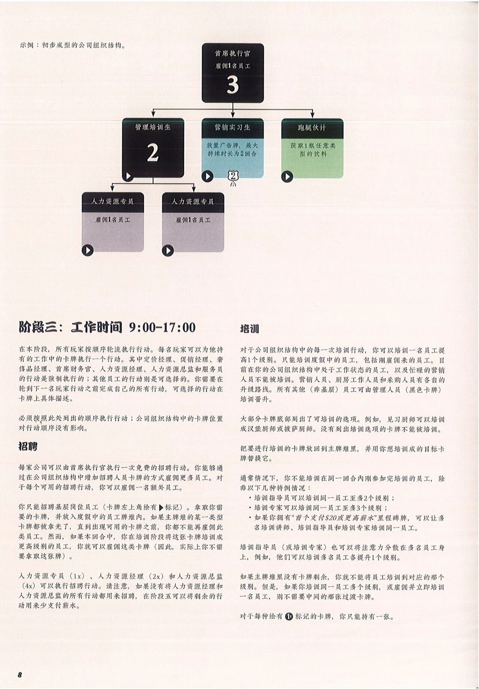
〔图 公司组织结构金字塔示意图，黑色箭头连接多张员工卡牌；图左上方印有文字"示例：初步成型的公司组织结构。"〕
示例：初步成型的公司组织结构。
图中卡牌文字：
- 顶层：首席执行官（黑色卡牌）——雇佣1名员工；牌面大数字 3
- 第二层左：管理培训生（黑色卡牌）——牌面大数字 2；左下角有▶标记
- 第二层中：营销实习生（蓝色卡牌）——放置广告牌，最大持续时长为2回合；左下角有▶标记；牌下方有一个带数字 2 的盾形图标（广告牌指示物）
- 第二层右：跑腿伙计（绿色卡牌）——获取1瓶任意类型的饮料；左下角有▶标记
- 第三层：人力资源专员 ×2（灰色卡牌）——各印"雇佣1名员工"；各左下角有▶标记
阶段三：工作时间 9:00-17:00
在本阶段，所有玩家按顺序轮流执行行动。每名玩家可以为他持有的工作中的卡牌执行一个行动。其中定价经理、促销经理、奢侈品经理、首席财务官、人力资源经理、人力资源总监和服务员的行动是强制执行的；其他员工的行动则是可选择的。你需要在轮到下一名玩家行动之前完成自己的所有行动，可选择的行动在卡牌上具体描述。
必须按照此处列出的顺序执行行动；公司组织结构中的卡牌位置对行动顺序没有影响。
招聘
每家公司可以由首席执行官执行一次免费的招聘行动。你能够通过在公司组织结构中增加招聘人员卡牌的方式雇佣更多员工。对于每个可用的招聘行动，你可以雇佣一名额外员工。
你只能招聘基层岗位员工（卡牌左上角绘有▶标记）。拿取你需要的卡牌，并放入度假中的员工牌堆内。如果主牌堆的某一类型卡牌都被拿光了，直到出现可用的卡牌之前，你都不能再雇佣此类员工。然而，如果本回合中，你在培训阶段将这张卡牌培训成更高级别的员工，你就可以雇佣这类卡牌（因此，实际上你不需要拿取这张牌）。
人力资源专员（1x）、人力资源经理（2x）和人力资源总监（4x）可以执行招聘行动。请注意，如果没有将人力资源经理和人力资源总监的所有行动都用来招聘，在阶段五可以将剩余的行动用来少支付薪水。
培训
对于公司组织结构中的每一次培训行动，你可以培训一名员工提高1个级别。只能培训度假中的员工，包括刚雇佣来的员工。目前在你的公司组织结构中处于工作状态的员工，以及忙碌的营销人员不能被培训。营销人员、厨房工作人员和采购人员有各自的升级路线。所有其他（非基层）员工可由管理人员（黑色卡牌）培训晋升。
大部分卡牌底部列出了可培训的选项。例如，见习厨师可以培训成汉堡厨师或披萨厨师。没有列出培训选项的卡牌不能被培训。
把要进行培训的卡牌放回到主牌堆里，并用你想培训成的目标卡牌替换它。
通常情况下，你不能培训在同一回合内刚参加完培训的员工，除非以下几种特例情况：
- 培训指导员可以培训同一员工至多2个级别；
- 培训专家可以培训同一员工至多3个级别；
- 如果你拥有"首个支付$20或更高薪水"里程碑牌，可以让多名培训讲师、培训指导员和培训专家培训同一员工。
培训指导员（或培训专家）也可以将注意力分散在多名员工身上，例如，他们可以培训多名员工各提升1个级别。
如果主牌堆里没有卡牌剩余，你就不能将员工培训到对应的那个级别。但是，如果你培训同一员工多个级别，或雇佣并立即培训一名员工，则不需要中间的那张过渡卡牌。
对于每种绘有1x标记的卡牌，你只能持有一张。〔注："1x"为黑底白字圆形标记〕
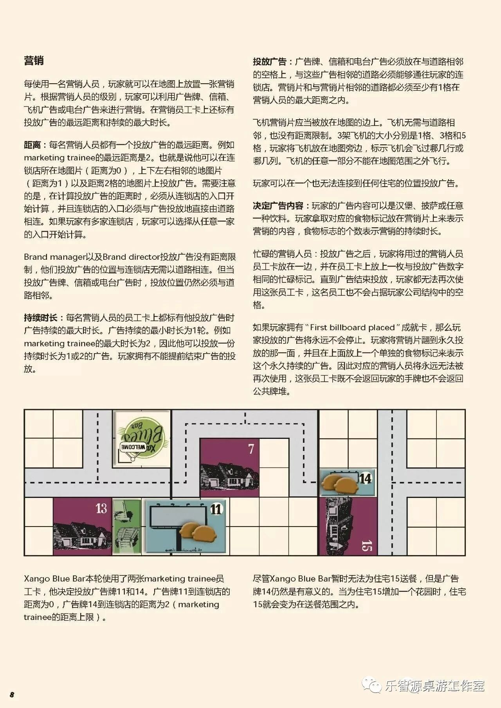
发起营销活动
公司组织结构中每有一名营销人员，就可以在版图上发起一次营销活动。根据营销人员的类型，你可以放置广告牌、邮箱、飞机或广播来投放广告。营销人员说明了放置广告的特定距离以及广告能持续的时长。发布营销活动之后，你必须选择想要投放的广告内容。
广告类型：营销实习生只能放置一个广告牌；营销经理可以放置一个邮箱或广告牌；品牌经理可以放置一个飞机、邮箱或广告牌；品牌总监可以放置任意类型的营销板块。
距离：每名营销人员都有特定的距离限制。例如，营销实习生的距离为2，这意味著〔原文如此，应为"着"〕他可以把广告牌放置在自己所处的地图板块（0）、相邻的地图板块（1），或者两步之遥的地图板块上。必须从快餐店的入口出发，并通过道路与广告牌相连接。计算营销人员距离时，可以自行选择从你的任意一家快餐店出发。
品牌经理和品牌总监不受距离限制，他们可以在道路到达不了的区域投放广告，但是，他们放置的广告牌、邮箱或广播，仍必须与道路相邻。
持续时长：营销人员牌上的文字描述了该员工发起的营销活动可持续的最长时间。营销活动最短的持续时间为1回合。例如，营销实习生放置的广告牌持续的最大时间为2回合，因此他发起的营销活动可以持续1回合或者2回合。但是，玩家不能主动让已在进行中的营销活动提前结束。
放置营销板块：广告牌、邮箱和广播必须放置在版图上的空白方格里，它们必须与营销人员放置该板块时所走的道路相邻。如果营销活动板块跨越多个地图板块，只要有一个与道路相邻的方格在营销人员的距离内即可。必须是营销板块自身的某个方格在这个距离内才行，仅仅只有与之相邻的道路格在距离内是不行。
飞机必须放置在版图的边缘。飞机不用与道路相连，也不受距离影响。可使用的飞机尺寸有1、3或5个方格大小，并且始终需要紧贴版图边缘，以确保飞过相应数量的行或列（不允许把飞机放置在无法飞过版图任何区域的地方）。
可以在无法触达任何房屋的区域发起营销活动。
决定广告内容：营销活动中，可以对披萨、汉堡或任意类型的饮料投放广告。为表示这一点，在营销板块上放置对应广告类型的木质标记，木质标记的数量等同于广告持续时长。
营销人员进入忙碌状态：发起营销活动之后，将这张营销人员牌移到一旁，并在卡牌上放置"忙碌"标记，该标记上的数字应与营销板块上的数字相同，用于表示直到营销活动结束后，才能继续使用该营销人员牌。处于忙碌状态的营销人员不会占用公司组织结构中的员工工位。
如果一名玩家拥有"首个放置广告牌"里程碑牌，该玩家发起的营销活动永久进行，不会结束。为表明这一点，把营销板块以永久面朝上放置在版图上，并且只放一个对应广告类型的木质标记在其上方，相应的营销人员牌在之后的游戏中都不可使用，这张牌不会返回到主牌堆或玩家手牌中。
〔图 版图局部示例，网格街道间有编号7、13、15的房屋和编号11、14的广告牌（牌面为汉堡等食物图案），左上另有一块咖啡图案广告牌，虚线框出相关的地图板块〕
赞果蓝调酒吧本回合在公司组织结构中放置了两名营销实习生，他们可以放置如上方图例所示的广告牌11和广告牌14，放置广告牌11的距离为0，因为它与快餐店位于同一个地图板块上；放置广告牌14的距离为2（营销实习生可到达的最大距离），因为你必须穿过邻近的两个地图板块。
虽然赞果蓝调酒吧暂时无法向房屋15提供售卖服务，放置广告牌14仍然有意义：给房屋15添加一个花园，就可以通过道路到达此房屋了。
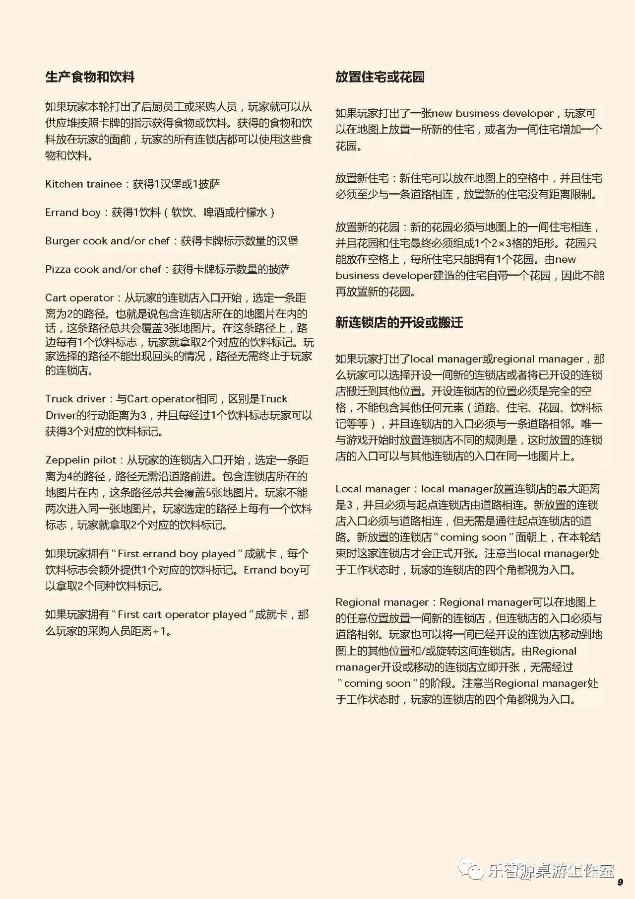
拿取食物和饮料
如果公司组织结构中含有厨房工作人员和/或饮料采购人员，可以根据卡牌上的文字描述从公共供应堆中拿取食物和饮料。获得的食物和饮料放置在玩家面前，每当需要时，你的所有连锁店都可以使用它们。
见习厨师：拿取1个汉堡或者1个披萨。
跑腿伙计：拿取1瓶任意类型的饮料（汽水、啤酒或柠檬汁）。
汉堡厨师/汉堡主厨：根据卡牌上的文字描述拿取相应数量的汉堡。
披萨厨师/披萨主厨：根据卡牌上的文字描述拿取相应数量的披萨。
手推车操作员：从其中一个快餐店入口开始，路线距离为2，包括快餐店所在的地图板块，路线最多覆盖3个地图板块。对于路过的每一个饮料进货点，从公共供应堆中拿取2瓶相应的饮料。请注意，你经过与饮料进货点（正交）相邻道路格才行〔原文如此〕。如果一个地图板块上存在多个饮料进货点，则你有时可能不止经过其中的一处，然而，不能在一条路上以U字形调头。手推车操作员不需要返回到你的快餐店里。
货车驾驶员：与手推车操作员规则相同，但是货车驾驶员的距离为3，并且对于路过的每一个饮料进货点，从公共供应堆中拿取3瓶相应的饮料。
飞艇驾驶员：从其中一家快餐店入口开始，路线距离为4，无视道路，包括快餐店所在的地图板块，路线最多覆盖5个地图板块。不可以经过同一个地图板块两次。对于飞过的板块上的每一个饮料进货点，从公共供应堆中拿取2瓶相应的饮料。如果一个地图板块上存在多个饮料进货点，则全都可以使你获得饮料。
如果一名玩家拥有"首个打出跑腿伙计"里程碑牌，则每个饮料进货点将额外提供一瓶饮料。跑腿伙计也将能拿取两瓶同一类型的饮料，包括刚打出的那名跑腿伙计。
如果一名玩家拥有"首个打出手推车操作员"里程碑牌，他的手推车操作员、货车驾驶员和飞艇驾驶员的距离额外增加1。
放置或移动快餐店
如果公司组织结构中含有区域经理或大区经理，可以放置一家新的快餐店，大区经理可以移动一家已有的快餐店〔原文如此，"快餐店"后为半角逗号〕。快餐店必须放置在不包含任何其他地图元素的空白方格上，并且快餐店的入口必须与道路相邻。然而，与初始设置不同，通过这种方式放置的快餐店的入口可与另一家快餐店的入口在同一地图板块上。
区域经理：区域经理可以通过道路在距离为3的地图板块上放置新的快餐店，通过道路，从该连锁公司的已有的一家快餐店开始计算路线。新建快餐店的入口必须与道路相邻，但并非一定要用这个相邻的道路格来计算距离。新建快餐店以"即将开业"面朝上放置，并且只会在回合结束时开业。请注意，只要区域经理处于工作中的状态，快餐店就有免下车服务，每个方向都是入口。
大区经理：大区经理可以在版图上的任意位置放置新的快餐店，新建快餐店的入口必须与道路相邻。大区经理还可以拿起一家已有的快餐店，把它放置在版图上的任意位置，并且/或者旋转方向。通过大区经理放置或移动的快餐店立即进入营业状态，没有即将开业的等待期。请注意，只要大区经理处于工作中的状态，快餐店就有免下车服务，每个方向都是入口。
放置新的房屋和花园
如果公司组织结构中含有新业务拓展经理，可以在地图上放置新的房屋，或者为已有的房屋增加一座花园。
放置一座新房屋：新建房屋可以放置在地图上的任意空地上，只要与至少一条道路相连即可，没有距离限制。自由选择要放置哪个房屋。
放置一座新花园：新花园必须与地图板块上的房屋相邻，连接2个方格，最后使房屋和花园构成一个2x3的矩形，花园只能放置在空白方格上，每座房屋只能拥有一座花园。翻转花园板块让其对准房屋板块，可以比较直观地看到它属于哪座房屋。通过新业务拓展经理放置在版图上的房屋自带一座花园，此后不能为该房屋再建另一座花园。
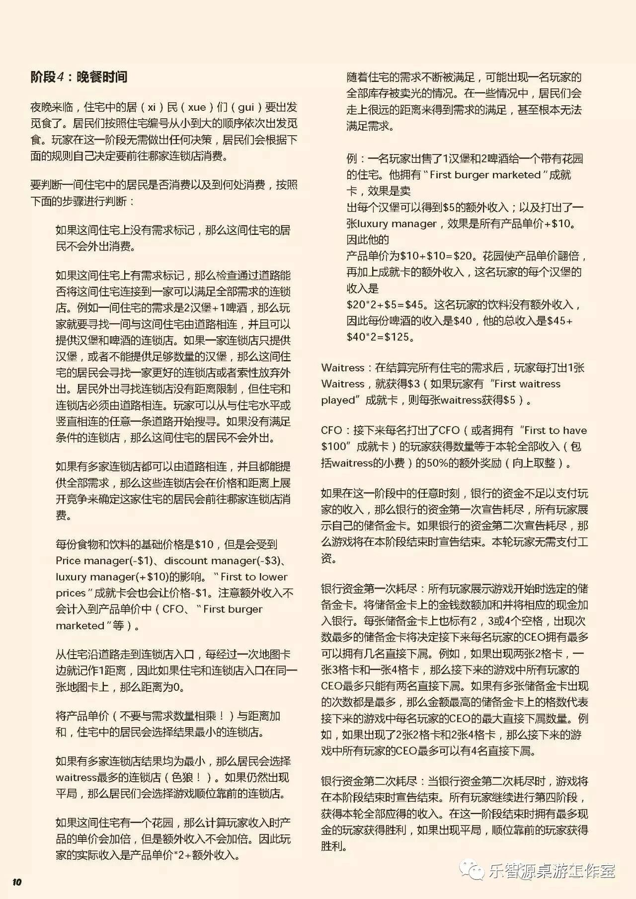
阶段四：晚餐时间
天色渐暗，到了城里的住户外出觅食的时间。住户会根据版图上的房屋门牌号从小到大依次行动。玩家在这一阶段不做任何决策；房屋里的住户会根据这一部分的规则决定去哪里就餐。
根据以下步骤决定一座房屋的住户是否就餐，以及就餐地点：
- 如果一座房屋上没有放置需求标记，该房屋的住户不会外出觅食。
- 如果一座房屋上放有需求标记，查看是否有一家快餐店可以通过道路与该房屋相连，并且可以提供该处住户需求的所有食物和饮料。例如，如果房屋里的住户需求2个汉堡和1瓶啤酒，就需要有一家快餐店能够同时提供2个汉堡和1瓶啤酒—如果快餐店只能提供汉堡，或者能提供的汉堡数量不够，该处住户会寻找更合适的就餐地点或者决定不外出觅食。住户觅食没有距离限制，但要求房屋和快餐店之间有道路相连，可以从与房屋或花园直接相连的任意道路起始。如果没有道路相连，该处住户将会死宅在家里〔原文如此〕。如果有一家快餐店满足所有需求，住户会去那里就餐。
- 如果存在多家快餐店能够满足住户的所有需求，并且都能通过道路与该房屋相连，就会产生竞争。住户将会评估价格和距离来选择要就餐的快餐店。
- 每件商品的标准单价是$10，如果连锁店的公司组织结构中含有一个或更多定价经理（-$1）、促销经理（-$3）或者奢侈品经理（+$10），商品单价会有所不同。"首个降价"里程碑牌会永久降低快餐店的商品单价$1，请注意，奖励效果（首席执行官、"首个推销汉堡"等）不改变商品单价。例如，一家快餐店有两名定价经理和一名促销经理处于工作中的状态，商品单价将会变为$5。
- 如需确定距离，计算从房屋到离得最近的快餐店的距离，必须沿着道路，走到快餐店入口。每穿过一个板块接缝处便视为多走了一步。因此，如果通过道路相连的房屋与快餐店入口在同一个地图板块上则距离为0。
- 计算商品单价和距离的总和。请注意，代表住户需求的标记数量与此次计算无关。住户将在总和最小的快餐店就餐。因此，住户宁可多走一步来为每件商品节省$1，多走两步来为每件商品节省$2，以此类推。
- 如果两家快餐店拥有相同的（商品单价+距离）总和数，则住户将会去公司组织结构中含有服务员人数最多的快餐店就餐。
- 如果这两家快餐店的公司组织结构中拥有的服务员人数也相同，则住户将会去回合顺位表排名靠前的快餐店就餐。
被住户选中的快餐店必须提供食物和饮料服务。从相应的房屋上弃置需求标记，并且从快餐店库存中弃置完全相同的标记。快餐店获得每一个售出商品对应的收入，确切来说，是获得每一个售出的商品单价+里程碑牌奖励。
如果房屋带有花园，那么快餐店为该房屋住户售出的每一个商品单价翻倍。请注意，里程碑牌奖励不翻倍，所以最后收入为（2x商品单价）+里程碑牌奖励。
由于房屋顺序取决于门牌号，那么极有可能出现的情况是，为顺位靠后的房屋住户提供服务时，快餐店食物已经耗尽了。这些住户会去别处觅食。在某些情况下，这可能会导致一些住户需要长途跋涉，或者根本找不到食物。
示例：一名玩家向一个带花园房屋的住户售出1个汉堡和2瓶啤酒，并且他拥有"首个推销汉堡"里程碑牌，为他售出的汉堡提供$5奖励。他还打出了一名奢侈品经理，将商品单价提高了$10，他的商品单价为$10+$10=$20。花园将汉堡的单价翻倍，2x$20=$40。之后，售出汉堡的里程碑牌奖励使收入再增加$5，因此，售出汉堡获得的总收入为$45。该玩家没有售出饮料的里程碑牌奖励，因此以单价$20售出的每瓶啤酒，其收入将因为花园而翻倍至$40。所以，该玩家此次收入总计为$45+2x$40=$125。
服务员
服务员：当服务完所有房屋的住户，每一家连锁店的公司组织结构中每含有一名服务员，获得小费$3（如果玩家拥有"首个打出服务员"里程碑牌，则获得的小费为$5）。
首席财务官
首席财务官：连锁店的公司组织结构中如果含有首席财务官（或者"首个拥有$100"里程碑牌），统计本回合包括服务员小费在内的所有现金收入，然后额外获得所有现金收入的50%（向上取整）。
如果在本阶段的任意时候，银行没有足够的资金全额支付玩家们的所有收入，则银行破产，翻开资金储备牌（详见银行破产规则）。如果银行第二次破产，游戏将在本阶段结束，并且本回合不用发放薪水。
银行第一次破产
银行第一次破产：翻开在游戏开始时由玩家选择的资金储备牌。把资金储备牌上的金额相加，将与总金额相同的钞票数额放入银行中，继续游戏。
每张资金储备牌上也显示了2、3或4个员工工位。哪种员工工位在场上出现次数的最多〔原文如此〕，该卡牌决定首席执行官下一回合的员工工位数量。例如，如果翻出两张"2个员工工位"卡牌、一张"3个员工工位"卡牌和一张"4个员工工位"卡牌，那么所有玩家的首席执行官在之后的游戏中都只有2个员工工位，而非原来的3个员工工位。如果两种类型的资金储备牌出现次数相同，数字大的卡牌决定员工工位数量。例如，翻出了两张"2个员工工位"卡牌和两张"4个员工工位"卡牌，那么首席执行官将拥有4个员工工位。将恰当的资金储备牌放置在首席执行官下方，作为员工工位新增数量的直观提示。
银行第二次破产
银行第二次破产：如果银行再次破产，游戏结束。完成阶段四，继续支付所有的玩家收入，如果需要，可以在纸上写出银行欠下的金额。本阶段结束时，现金最多的玩家获得游戏胜利。如果出现平局，平局玩家当中回合顺位表排名靠前的玩家获胜。
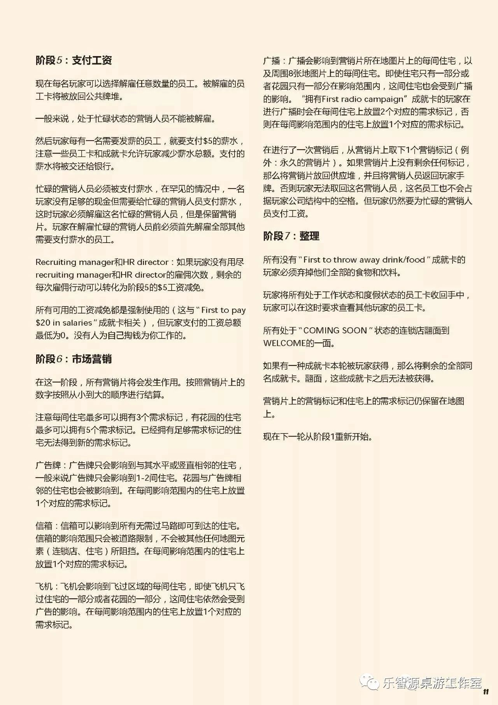
阶段五：发放薪水
每家连锁店现在可以选择解雇任意数量的员工，无论是在公司组织结构中的员工，还是在度假中的员工。被解雇的员工牌必须放回到可使用的主牌堆里。
通常情况下，忙碌中的营销人员不能被解雇。
接着，每家连锁店需要为位于公司组织结构中和度假中的每个绘有〔钞票堆图标〕标记的员工支付$5。请注意，有许多里程碑牌和员工能力可以减少你需要支付的薪水数额。支付的薪水返回到银行中。
绘有〔钞票堆图标〕标记的营销人员即使处于忙碌状态，也要支付其薪水。在特殊情况下，玩家没有钱，又必须向忙碌中的营销人员支付薪水，此时，营销人员必须被解雇，但是相应的营销活动照样在版图上进行。请注意，只有当解雇了所有需要支付薪水的员工时，才允许这样做。
人力资源经理和人力资源总监：如果公司组织结构中含有人力资源经理和人力资源总监，并且还没有充分利用他们的能力雇佣新员工，那么他们的额外行动会减少连锁店需要支付的薪水数额，每剩余一个行动少支付$5。
所有可使用的折扣都必须使用（这会与你是否能得到"首个支付$20薪水"里程碑牌有关。〔原文如此〕）。无论你拥有多少薪水折扣，需要支付的最低薪水数额为$0——员工才不会花钱为你干活呢！
阶段六：营销活动
在本阶段，所有营销活动开始运作，根据营销板块上的数字从小到大依次进行。
请注意，每座房屋最多只能放置3个需求标记，如果房屋带有花园则可放置5个需求标记。如果营销活动传播到一座已经放满需求标记的房屋，不对该房屋产生影响，这可能会导致一些营销活动毫无用处，不过营销活动通常不都是这样的吗〔原文如此〕。
广告牌营销：广告牌能够影响所有与它相邻的房屋。通常情况下，广告牌只能影响到1或2座房屋。广告牌可以在每座相邻房屋上放置与营销活动投放的广告类型相同的需求标记。即使某座房屋只有花园与广告牌相邻，也能影响到该房屋。
邮箱营销：邮箱能够影响到所有无需横穿道路即可连通的房屋（你可以将被道路和版图边界围成的封闭区域视为一个"街区"）。邮箱的连通性只会被道路阻断，它可以自由穿过地图上的其他元素，比如快餐店和房屋。邮箱可以在街区内的每座房屋上放置与营销活动投放的广告类型相同的需求标记。
飞机营销：飞机能够影响到直线飞行路径上的每一座房屋。这些房屋位于从飞机处开始计算的1、3或5行列中，在飞机途经的每座房屋上放置与营销活动投放的广告类型相同的需求标记。即使只有房屋的一部分或花园在飞行区域内，也能被影响到。
广播营销：广播能够影响到营销活动所在板块的每一座房屋，以及与其相邻的所有8个板块上的每一座房屋。即使只有房屋的一部分或花园在这些板块上，也能被影响到。由拥有"首个广播营销"里程碑牌的玩家发起的广播营销活动能放置2个需求标记。否则放置一个需求标记。
营销活动开始运作之后，从该营销板块上移除一个广告标记（除非这是一场永久营销活动）。如果营销活动的标记没有剩余，返还营销板块，并且将相应的营销人员返回到玩家手牌中。否则，营销板块留在版图上，并且营销人员保持忙碌状态。请注意，忙碌的营销人员在下一回合不能被放进公司组织结构中，也不需要占用员工工位。但是，该员工仍然需要薪水！
阶段七：清理阶段
没有"首个丢弃饮料/食物"里程碑牌的玩家必须弃置库存中的所有食物和饮料。
公司组织结构中的卡牌和度假中的卡牌全都收回手牌中，其他玩家可能会在此时要求查看它们。
所有以"即将开业"面朝上放置的快餐店翻转为"欢迎光临"面朝上。
如果在本回合内有任何一种里程碑牌被认领，将同一类型的所有剩余里程碑牌翻面，它们在之后的游戏中不能被使用。
营销活动中已投放的广告标记，和房屋上放置的需求标记，仍然放置在版图上。
接着进入下一回合，从阶段一开始。
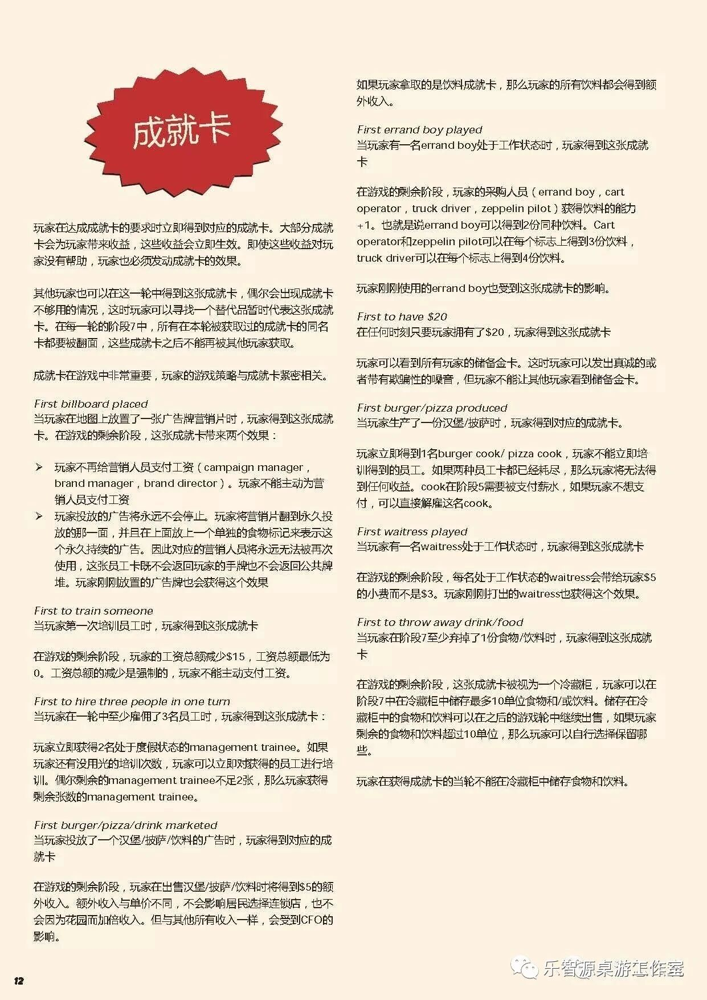
〔图 红色爆炸星形标题框，内印大字"里程碑牌"〕
里程碑牌（篇首说明）
如果玩家在回合内的任意时刻达成里程碑牌的条件，立即获得该里程碑牌。大部分里程碑牌都能提供增益效果，且立即生效，即使没什么用处，你也必须在之后的游戏中使用该效果。
如果其他玩家在回合内同样达成了里程碑牌的条件，也能够认领该里程碑。有时可能会遇上里程碑牌不足的情况，请制作一份副本备用发放。在每一回合的阶段七，场上所有至少被认领过一次的里程碑牌将被翻面，从游戏中移除，并且之后不能再被其他玩家认领了。
里程碑在游戏中占有举足轻重的分量，围绕它们展开你的策略是至关重要的。
首个放置广告牌
当你在地图上放置广告牌时，即可认领该里程碑牌。
在之后的游戏中，会产生两种效果：
- 你不用向营销人员（营销经理、品牌经理、品牌总监）发放薪水。不允许自愿支付薪水。
- 当你发起营销活动之后，该营销活动将永久进行。为表明这一点，把营销板块以永久面朝上放置在版图上，并放上一个木质标记，相应的营销人员牌在之后的游戏中无法再被使用，该牌不会返回到主牌堆或玩家手牌中，该规则也会应用在你用于获取里程碑的广告牌上。
首个培训员工
当你把员工培训到更高级别时，即可认领该里程碑牌。
之后的游戏中，你在发放薪水时可以少支付$15，支付的薪水数额不能低于$0。该折扣强制性使用，不允许自愿支付薪水。
首个在一回合内雇佣3名员工
当你在同一回合内雇佣了3名或以上员工时，即可认领该里程碑牌。
立即获得2张管理培训生牌，放置在度假中的牌堆上。如果你有主动培训能力，可在培训环节开始之前，即在招聘环节期间就培训这些员工牌。在不太可能的情况下，即没有足够的管理培训生牌剩余，则获取剩余的任意基层岗位员工。
首个推销汉堡/披萨/饮料
当你发起营销活动，分别为汉堡/披萨/任意类型的饮料投放广告时，即可认领相应的里程碑牌。
在之后的游戏中，该连锁店获得"正宗汉堡/披萨/饮料发源地"奖励，无论何时出售汉堡/披萨/饮料，都会得到额外$5，该奖励不影响商品单价，这意味著〔原文如此：印作"著"〕它不会影响住户去哪就餐的决定，也不会被花园效果翻倍。然而，同所有的收入一样，该奖励可以受到首席财务官的效果加成。
就饮料而言，奖励包括所有类型的饮料，而不仅仅是原先推销的那种饮料。
首个打出跑腿伙计
当你在公司组织结构中放置一个跑腿伙计时，即可认领该里程碑牌。但是，还在度假中的跑腿伙计不能用于获取该里程碑。
在接下来的游戏中，你的采购人员（跑腿伙计、手推车操作员、货车驾驶员和飞艇驾驶员）从路过的每个来源处获得1瓶额外饮料。因此，跑腿伙计会获得2瓶（相同的）任意类型饮料，手推车操作员和飞艇驾驶员从路过的每个饮料进货点处获得3瓶饮料，货车驾驶员获得4瓶饮料。
奖励在放置首个跑腿伙计获取该里程碑时生效。
首个拥有$20
如果你在任何时候拥有$20现金（实际上意味着在获得收入之后以及发放薪水之前），即可认领该里程碑牌。
你可以查看扣置在银行旁边的资金储备牌。允许在看到卡牌时发出真实的或混淆视听的言论，但是，你不能直接把卡牌展示给其他玩家。
首个制作汉堡/披萨
当你分别制作1个汉堡/披萨时，即可认领该里程碑牌。
你立即获得一张汉堡厨师/披萨厨师卡牌。由于该里程碑在生产过程中被认领，你不能培训该汉堡/披萨厨师，因为培训环节在生产之前进行。如果没有更多相应类型的厨师牌剩余，你什么也不会得到。在发放薪水阶段需要向厨师支付薪水，如果你不想付钱，可选择解雇厨师。
首个打出服务员
当你在公司组织结构中放置一名服务员，即可认领该里程碑牌。但是，还在度假中的服务员不能用于获得该里程碑牌。
在之后的游戏中，你的公司组织结构中每有一名服务员，会得到$5小费，而非$3小费。
奖励在放置首名服务员获取该里程碑时生效。
首个丢弃饮料/食物
当你在阶段七（清理现场）至少丢弃1个食物或饮料时，即可认领该里程碑牌。
在之后的游戏中，该里程碑牌可作为冰箱使用。在阶段七，你可以向冰箱里储存最多10个标记（食物和/或饮料），这些物品可以在之后的回合中售出。物品可以在冰箱中存放任意时长。如果你拥有的物品标记数量超过10个，可以自行选择保留或弃置哪几个标记。
在你认领该里程碑牌的当前回合，还不能够向冰箱里储存任何物品标记。
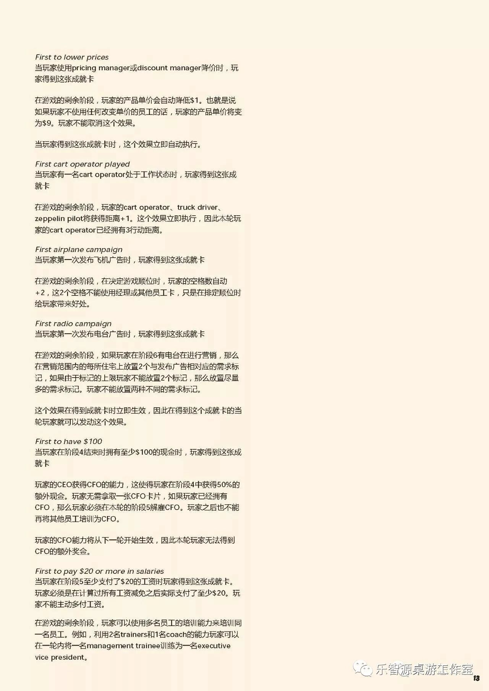
首个降价
当你在公司组织结构中放置一名定价经理或促销经理时，即可认领该里程碑牌，从而降低售价。
在之后的游戏中，你的售价将自动降低$1。例如，如果你不放置任何影响售价的经理卡牌，商品单价始终是$9。无法撤销此效果。
该效果立即生效。因此，首次降价时，你的商品单价在当前回合已经降低了$1。
首个打出手推车操作员
当你在公司组织结构中放置第一名手推车操作员时，即可认领该里程碑。但是，还在度假中的手推车操作员不能用于获得该里程碑牌。
在之后的游戏中，你的手推车操作员、货车驾驶员和飞艇驾驶员的距离+1，该效果立即生效，因此你的第一名手推车操作员的距离为3。
首个飞机营销
当你发起一次飞机营销时，即可认领该里程碑牌。
在之后的游戏中，当决定回合顺位时，你要增加2个额外员工工位。这些员工工位不能用来放置管理人员或其他员工，它们仅作为决定回合顺位时的奖励。
首个广播营销
当你发起一次广播营销时，即可认领该里程碑牌。
在之后的游戏中，如果你在阶段六拥有正在进行的广播营销活动：在广播能够影响到的每一座房屋上，放置2个与广告类型相对应的需求标记。如果该房屋的需求标记已满，放置0或1个标记，这取决于该房屋还能容纳的广告量。
你不能选择放置1个需求标记来取代原本应该放置的2个需求标记，毕竟你的广播会推销同样的商品2次，并且它不能推销2种不同商品。
该效果立即生效，因此，在当前回合的阶段六，该里程碑牌效果已触发。
首个拥有$100〔原文如此：P.5 里程碑牌图上同效果牌印作"首个拥有$700"，两处金额不一致〕
如果你在阶段四结束时，拥有$100或更多现金，即可认领该里程碑牌。
你的首席执行官获得了首席财务官的能力，该牌也能作为首席财务官使用，在阶段四（晚餐时间）结束，提供收入增加50%的奖励。你不会得到首席财务官牌。如果你已经拥有首席财务官牌，必须在当前回合的阶段五解雇他。认领该里程碑牌之后，你不能再将员工培训为首席财务官了。
新能力将在下一回合内生效，你只能在阶段四结束后才能获得该能力。
首个支付$20或更高薪水
如果你在阶段五必须支付$20或更高薪水，则可认领该里程碑牌。这些薪水必须实际支付——你不能用打过折扣的薪水原价进行计算。请注意，你必须在阶段五开始时，执行所有可使用的折扣。你不能自发支付比员工所需更高的薪水（当然，你可以使用人力资源经理或人力资源总监的招聘能力，在阶段二雇佣一名员工，若如此执行，她的薪水折扣能力在阶段五就不会被触发）。
在之后的游戏中，你可以使用培训效果让同一员工参加多种培训。例如，你有两名培训讲师和一名培训指导员，可以让一名管理培训生在一回合内被培训为执行副总裁。
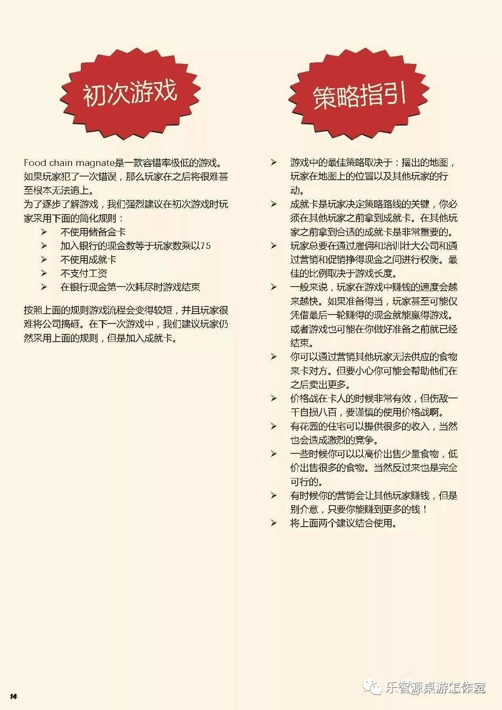
〔图 页面顶部左右各一个红色爆炸星形标签，左为"游戏说明"，右为"游戏策略"，均为白字红底；页面其余部分为白底双栏文字，右下角页码"15"〕
游戏说明
快餐连锁大亨是一款极其无情的游戏。如果你走错一步，就会很难、甚至不可能回到正轨。
为了加深对本游戏的理解，我们强烈建议，在第一局游戏中根据以下提示改变规则：
- 不要使用银行资金储备牌。
- 向银行中放入$75x玩家人数的钞票，而非$50。
- 移除所有里程碑牌。
- 不发放任何薪水（跳过阶段五）。
- 在银行第一次破产时结束游戏。
这样做会减少游戏时长，使每名玩家都尽可能了解游戏规则，而不至于过早被维持公司营业的艰难困苦压垮。对于你的下一局游戏，我们建议使用同样的变体规则，并且添加里程碑牌（即使这些卡牌中的一部分在游戏说明中看上去显然没什么收益）。
游戏策略
一些策略指南：
- 本游戏的最佳策略高度依赖于：板块布局，你的板块位置，以及其他玩家的行动（没有特定顺序）。
- 里程碑牌是规划策略的关键。你需要在其他玩家之前达成里程碑牌的条件。通常来说，尽快认领合适的里程碑牌是很有必要的，因为当你达成条件时，其他玩家也很可能在考虑它们。
- 通过招聘和培训，以及通过市场营销和销售，协调公司的权衡取舍。成功的组织结构取决于游戏时长，这完全由玩家的选择决定。
- 通常，游戏在快要结束时会加快进程。只要准备得当，你可以仅靠在最后一回合赚钱取胜。或者，你仍可以为一个永远不会到来的回合做准备。
- 你可以为其他玩家不能制作的商品投放广告，以此让他们感到痛苦。但要小心，你也可能会帮他们在以后卖出更多商品！
- 用价格战打压其他玩家是非常有效的，但是对你而言，这么做的代价也很高昂，你需要战术性地使用它们。
- 带花园的房屋能为你带来更大收益，但也能引来竞争。
- 有时，你可以高价卖出少量商品，而非打折出售成堆商品。但也可以反过来执行。
- 有时，通过投放广告让其他玩家赚点小钱也是很有用的——只要你自己赚到更多钱！
- 结合以上观点。